Where Did the Dinosaurs Go?
A true story from long, long ago, told by Pip, a tiny blue bird with a BIG secret.
👆 Tap the animals in the picture. Tap 📖 Read to me to hear the story. Then press Next ▶.
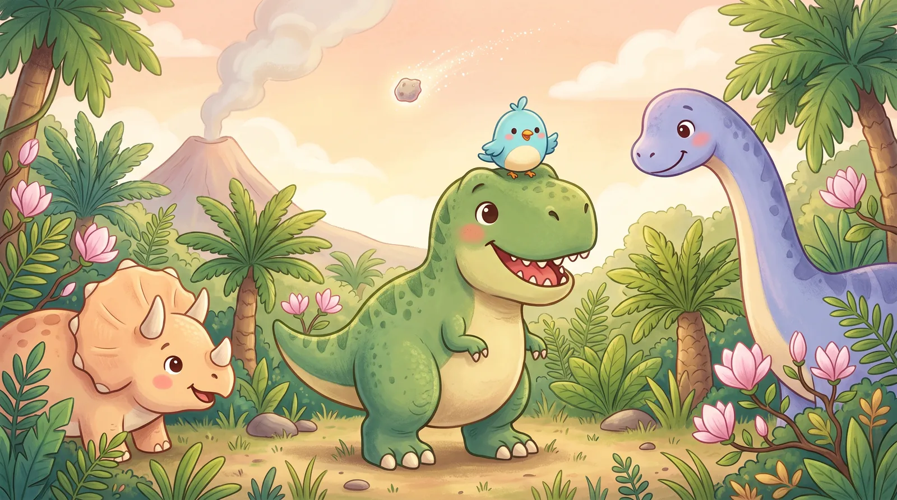
A true story from long, long ago, told by Pip, a tiny blue bird with a BIG secret.
👆 Tap the animals in the picture. Tap 📖 Read to me to hear the story. Then press Next ▶.
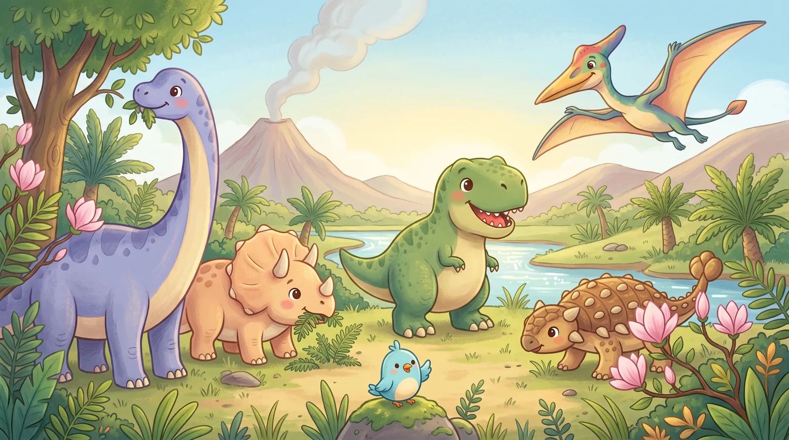
Dinosaurs lived on Earth for a super-duper long time: about 165 million years!
That's way, way longer than people have been around. Big ones, small ones, spiky ones and long-necked ones all stomped around.
👆 Tap each animal to say hello! 0 / 6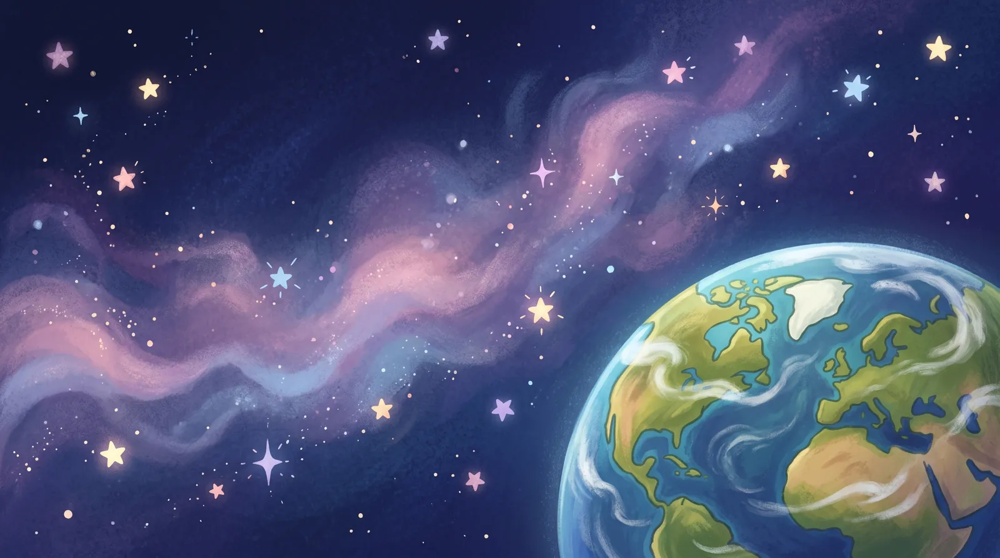
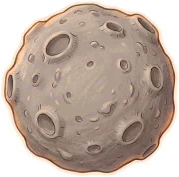
Then, 66 million years ago, a giant space rock called an asteroid came zooming toward Earth.
It was about 10 km wide, bigger than a mountain! And it was flying about 20 km every second. That's around 80 times faster than a jet plane!
👆 Tap the asteroid and watch where it goes.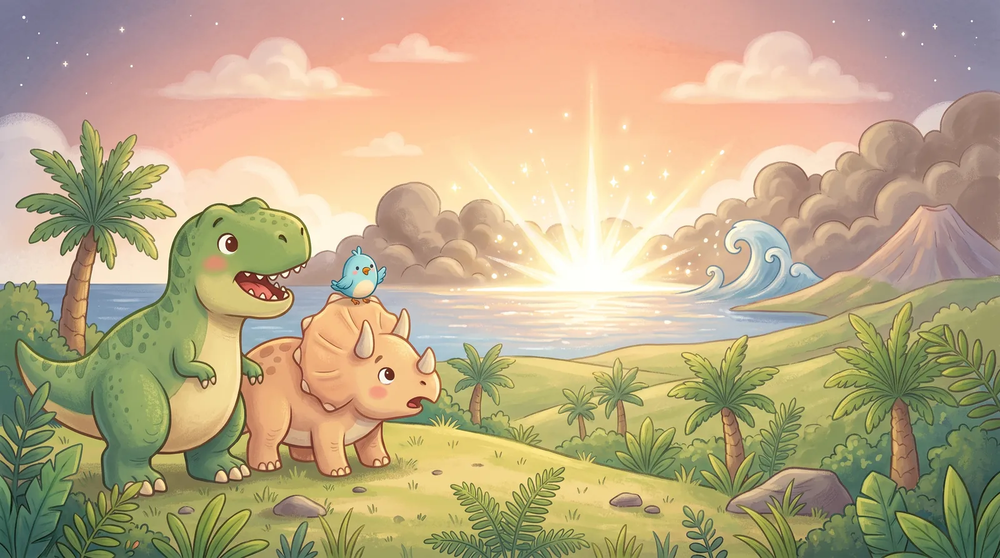
KA-BOOM! The asteroid crashed into the sea near a place we now call Mexico.
It dug a hole about 180 km wide. The ground shook, giant waves called tsunamis rushed across the ocean, and hot dust and rocks flew high into the sky.
👆 Tap the bright flash, then tap the big wave!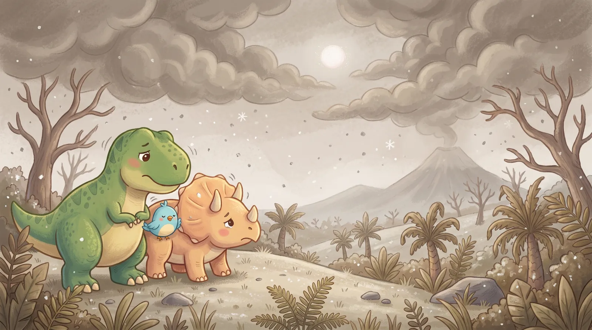
Dust and soot spread all around the world like a giant, dirty blanket in the sky.
The Sun's light could hardly get through. For months, maybe even years, Earth was dark and cold, like a winter night that wouldn't end. Brrr!
🌋 Double trouble: big volcanoes in India were also puffing out smoke and gas around this time. 👆 Tap the Sun and the shivering friends.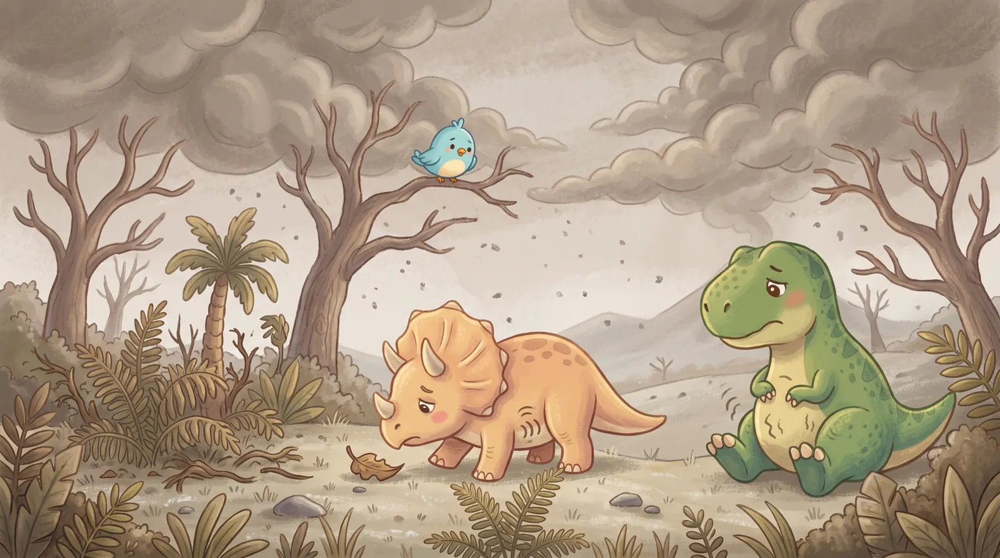
Plants need sunlight to make their food. With no sunlight, the plants wilted.
So the plant-eaters got hungry... and then the meat-eaters got hungry too. It's like a row of falling dominoes!
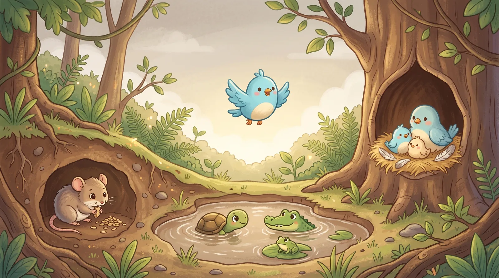
But not everyone disappeared! Small animals that could hide, didn't need much food, and could eat seeds, bugs or old leaves made it through.
About 3 out of every 4 kinds of living things vanished. The little ones kept life going.
🔎 Find the survivors! Tap the hiding places. 0 / 5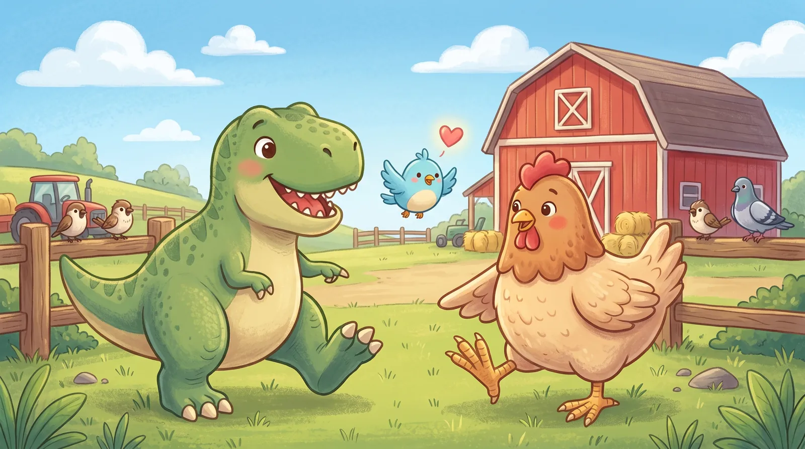
Now here's Pip's BIG secret: birds ARE dinosaurs!
Some small, feathered dinosaurs survived. Over millions of years, they became the birds we see today. That means a chicken is a cousin of T. rex!
👆 Tap the T. rex, the chicken, and their feet. What looks the same?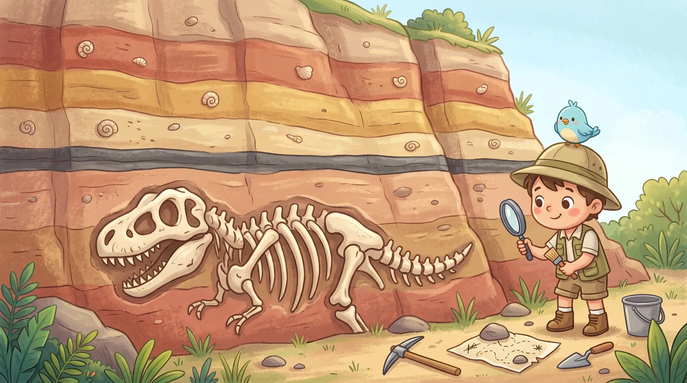
How do scientists know all this? They dig! Rocks pile up in layers, like a giant layer cake. The bottom layers are the oldest.
All around the world, there is one thin, dark layer of asteroid dust. Below it: dinosaur fossils. Above it: no more big dinosaurs!
🗺️ Scientists even found the giant crater, buried under Mexico. It's called Chicxulub (say: CHEEK-shoo-loob). 👆 Tap the layers!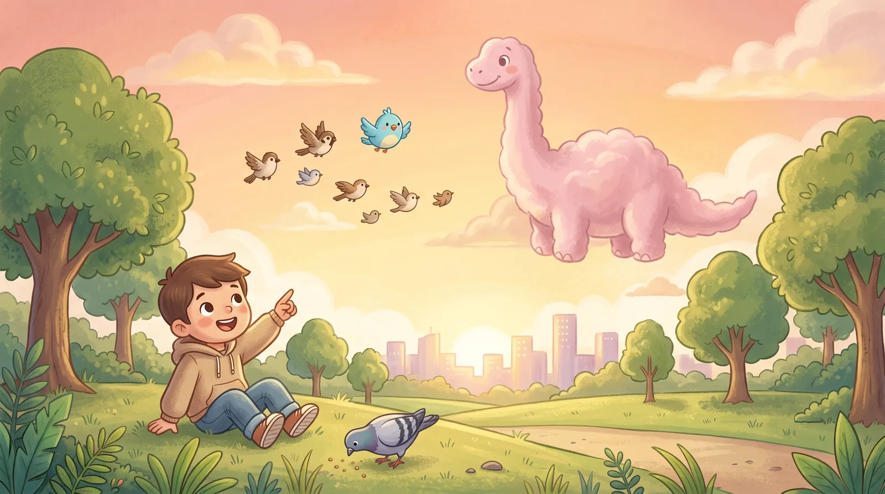
The dinosaurs didn't all go away. Some of them are flying over your head right now! Next time you see a pigeon, say: "Hello, little dinosaur!"
🧠 Quick Quiz!